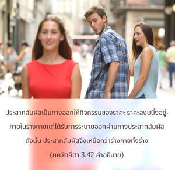
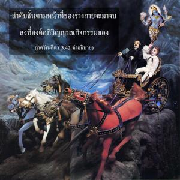
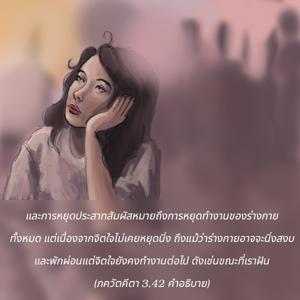
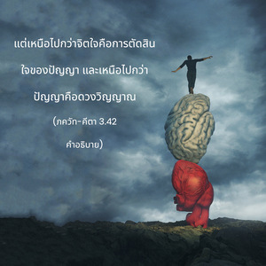

ประสาทสัมผัสที่ทำงานสูงกว่าวัตถุที่ไม่มีชีวิต จิตใจสูงกว่าประสาทสัมผัส ปัญญาสูงไปกว่าจิตใจ และเขา (ดวงวิญญาณ) ยิ่งสูงขึ้นกว่าปัญญา




ประสาทสัมผัสเป็นทางออกให้กิจกรรมของราคะ ราคะสงบนิ่งอยู่ภายในร่างกายแต่ได้รับการระบายออกผ่านทางประสาทสัมผัส ดังนั้นประสาทสัมผัสจึงเหนือกว่าร่างกายทั้งร่าง ทางออกเหล่านี้ไม่ได้ใช้เมื่อมีจิตสำนึกที่สูงกว่าหรือมีกฺฤษฺณจิตสำนึก ในกฺฤษฺณจิตสำนึกดวงวิญญาณจะเชื่อมสัมพันธ์โดยตรงกับบุคลิกภาพสูงสุดแห่งพระเจ้า ดังนั้นลำดับชั้นตามหน้าที่ของร่างกายจะมาจบลงที่องค์อภิวิญญาณกิจกรรมของร่างกายหมายถึงหน้าที่ของประสาทสัมผัส และการหยุดประสาทสัมผัสหมายถึงการหยุดทำงานของร่างกายทั้งหมด แต่เนื่องจากจิตใจไม่เคยหยุดนิ่งถึงแม้ว่าร่างกายอาจจะนิ่งสงบและพักผ่อนแต่จิตใจยังคงทำงานต่อไป ดังเช่นขณะที่เราฝันแต่เหนือไปกว่าจิตใจคือการตัดสินใจของปัญญา และเหนือไปกว่าปัญญาคือดวงวิญญาณ ฉะนั้นถ้าหากดวงวิญญาณปฏิบัติงานกับองค์ภควานฺโดยตรงตามธรรมชาติส่วนที่รองลงมาทั้งหมด เช่น ปัญญา จิตใจ และประสาทสัมผัสก็จะร่วมปฏิบัติงานโดยปริยาย ใน กฐ อุปนิษทฺ มีข้อความคล้ายๆกันซึ่งกล่าวไว้ว่า อายตนะภายนอกเพื่อสนองประสาทสัมผัสเหนือกว่าประสาทสัมผัส และจิตใจเหนือกว่าอายตนะภายนอก ฉะนั้นหากจิตใจปฏิบัติงานโดยตรงในการรับใช้องค์ภควานฺอยู่เสมอจะไม่เปิดโอกาสให้ประสาทสัมผัสถูกใช้ไปในทางอื่น ท่าทีของจิตใจเช่นนี้ได้อธิบายไว้แล้ว ปรํ ทฺฤษฺฏฺวา นิวรฺตเต หากจิตใจถูกใช้ไปในการรับใช้ทิพย์แด่องค์ภควานฺจะไม่เปิดโอกาสให้มันไปรับใช้นิสัยที่ต่ำกว่า ใน กฐ อุปนิษทฺ ได้อธิบายดวงวิญญาณว่า มหานฺ หรือยิ่งใหญ่ ดังนั้นดวงวิญญาณอยู่เหนือสิ่งอื่นใดทั้งหมด เช่น อายตนะภายนอก อายตนะภายในหรือประสาทสัมผัส จิตใจ และปัญญา ดังนั้นการเข้าใจสถานภาพพื้นฐานอันแท้จริงโดยตรงของดวงวิญญาณคือคำตอบของปัญหาทั้งปวง
ด้วยสติปัญญาเราจะต้องค้นหาสถานภาพพื้นฐานอันแท้จริงของดวงวิญญาณ และให้จิตใจทำงานในกฺฤษฺณจิตสำนึกอยู่เสมอซึ่งจะแก้ไขปัญหาทั้งหมด ผู้ปฏิบัติเริ่มแรกจะได้รับคำแนะนำให้อยู่ห่างจากอายตนะภายนอก นอกจากนี้ยังต้องฝึกจิตใจให้เข้มแข็งด้วยการใช้สติปัญญา และด้วยสติปัญญาเราใช้จิตใจของเราปฏิบัติในกฺฤษฺณจิตสำนึก จากการศิโรราบอย่างสมบูรณ์แด่บุคลิกภาพสูงสุดแห่งพระเจ้าจิตใจจะเข้มแข็งขึ้นโดยปริยาย ถึงแม้ว่าประสาทสัมผัสจะร้ายกาจมากเหมือนกับงูพิษ แต่จะกลายมาเป็นงูพิษที่ปราศจากเขี้ยว แม้ว่าดวงวิญญาณเป็นนายของปัญญา จิตใจ รวมทั้งประสาทสัมผัส ถึงกระนั้นดวงวิญญาณจะยังต้องได้รับการฝึกฝนให้เข้มแข็งด้วยการมาคบหาสมาคมกับกฺฤษฺณในกฺฤษฺณจิตสำนึก มิฉะนั้นจะมีโอกาสตกต่ำลงอันเนื่องมาจากจิตใจที่หวั่นไหว